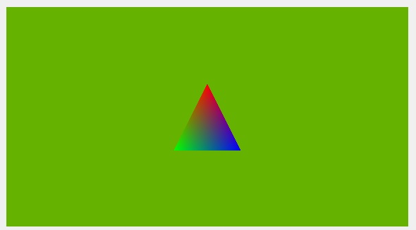

Simple RHI Widget Example
Shows how to render a triangle using QRhi, Qt's 3D API and shading language abstraction layer.

Screenshot of the Simple RHI Widget example
This example is, in many ways, the counterpart of the RHI Window Example in the QWidget world. The QRhiWidget subclass in this applications renders a single triangle, using a simple graphics pipeline with basic vertex and fragment shaders. Unlike the plain QWindow-based application, this example does not need to worry about lower level details, such as setting up the window and the QRhi, or dealing with swapchain and window events, as that is taken care of by the QWidget framework here. The instance of the QRhiWidget subclass is added to a QVBoxLayout. To keep the example minimal and compact, there are no further widgets or 3D content introduced.
Once an instance of ExampleRhiWidget, a QRhiWidget subclass, is added to a top-level widget's child hierarchy, the corresponding window automatically becomes a Direct 3D, Vulkan, Metal, or OpenGL-rendered window. The QPainter-rendered widget content, i.e. everything that is not a QRhiWidget, QOpenGLWidget, or QQuickWidget, is then uploaded to a texture, whereas the mentioned special widgets each render to a texture. The resulting set of textures is composited together by the top-level widget's backingstore.
Structure and main()
The main() function is quite simple. The top-level widget defaults to a size of 720p (this size is in logical units, the actual pixel size may be different, depending on the scale factor. The window is resizable. QRhiWidget makes it simple to implement subclasses that correctly deal with the resizing of the widget due to window size or layout changes.
int main(int argc, char **argv) { QApplication app(argc, argv); ExampleRhiWidget *rhiWidget = new ExampleRhiWidget; QVBoxLayout *layout = new QVBoxLayout; layout->addWidget(rhiWidget); QWidget w; w.setLayout(layout); w.resize(1280, 720); w.show(); return app.exec(); }
The QRhiWidget subclass reimplements the two virtuals: initialize() and render(). initialize() is called at least once before render(), but is also invoked upon a number of important changes, such as when the widget's backing texture is recreated due to a changing widget size, when render target parameters change, or when the widget changes to a new QRhi due to moving to a new top-level window.
Note: Unlike QOpenGLWidget's legacy initializeGL - resizeGL - paintGL model, there are only two virtuals in QRhiWidget. This is because there are more special events that possible need taking care of than just resizing, e.g. when reparenting to a different top-level window. (robust QOpenGLWidget implementations had to deal with this by performing additional bookkeeping, e.g. by tracking the associated QOpenGLContext lifetime, meaning the three virtuals were not actually sufficient) A simpler pair of initialize - render, where initialize is re-invoked upon important changes is better suited for this.
The QRhi instance is not owned by the widget. It is going to be queried in initialize() from the base class. Storing it as a member allows recognizing changes when initialize() is invoked again. Graphics resources, such as the vertex and uniform buffers, or the graphics pipeline are however under the control of ExampleRhiWidget.
#include <QRhiWidget> #include <rhi/qrhi.h> class ExampleRhiWidget : public QRhiWidget { public: ExampleRhiWidget(QWidget *parent = nullptr) : QRhiWidget(parent) { } void initialize(QRhiCommandBuffer *cb) override; void render(QRhiCommandBuffer *cb) override; private: QRhi *m_rhi = nullptr; std::unique_ptr<QRhiBuffer> m_vbuf; std::unique_ptr<QRhiBuffer> m_ubuf; std::unique_ptr<QRhiShaderResourceBindings> m_srb; std::unique_ptr<QRhiGraphicsPipeline> m_pipeline; QMatrix4x4 m_viewProjection; float m_rotation = 0.0f; };
For the #include <rhi/qrhi.h> statement to work, the application must link to GuiPrivate (or gui-private with qmake). See QRhi for more details about the compatibility promise of the QRhi family of APIs.
CMakeLists.txt
target_link_libraries(simplerhiwidget PRIVATE
Qt6::Core
Qt6::Gui
Qt6::GuiPrivate
Qt6::Widgets
)
Rendering Setup
In examplewidget.cpp the widget implementation uses a helper function to load up a QShader object from a .qsb file. This application ships pre-conditioned .qsb files embedded in to the executable via the Qt Resource System. Due to module dependencies (and due to still supporting qmake), this example does not use the convenient CMake function qt_add_shaders(), but rather comes with the .qsb files as part of the source tree. Real world applications are encouraged to avoid this and rather use the Qt Shader Tools module's CMake integration features (qt_add_shaders). Regardless of the approach, in the C++ code the loading of the bundled/generated .qsb files is the same.
static QShader getShader(const QString &name) { QFile f(name); return f.open(QIODevice::ReadOnly) ? QShader::fromSerialized(f.readAll()) : QShader(); }
Let's look at the initialize() implementation. First, the QRhi object is queried and stored for later use, and also to allow comparison in future invocations of the function. When there is a mismatch (e.g. when the widget is moved between windows), recreation of graphics resources need to be recreated is triggered by destroying and nulling out a suitable object, in this case the m_pipeline. The example does not actively demonstrate reparenting between windows, but it is prepared to handle it. It is also prepared to handle a changing widget size that can happen when resizing the window. That needs no special handling since initialize() is invoked every time that happens, and so querying renderTarget()->pixelSize() or colorTexture()->pixelSize() always gives the latest, up-to-date size in pixels. What this example is not prepared for is changing texture formats and multisample settings since it only ever uses the defaults (RGBA8 and no multisample antialiasing).
void ExampleRhiWidget::initialize(QRhiCommandBuffer *cb) { if (m_rhi != rhi()) { m_pipeline.reset(); m_rhi = rhi(); }
When the graphics resources need to be (re)created, initialize() does this using quite typical QRhi-based code. A single vertex buffer with the interleaved position - color vertex data is sufficient, whereas the modelview-projection matrix is exposed via a uniform buffer of 64 bytes (16 floats). The uniform buffer is the only shader visible resource, and it is only used in the vertex shader. The graphics pipeline relies on a lot of defaults (for example, depth test off, blending disabled, color write enabled, face culling disabled, the default topology of triangles, etc.) The vertex data layout is x, y, r, g, b, hence the stride is 5 floats, whereas the second vertex input attribute (the color) has an offset of 2 floats (skipping x and y). Each graphics pipeline has to be associated with a QRhiRenderPassDescriptor. This can be retrieved from the QRhiRenderTarget managed by the base class.
Note: This example relies on the QRhiWidget's default of autoRenderTarget set to true. That is why it does not need to manage the render target, but can just query the existing one by calling renderTarget().
if (!m_pipeline) {
m_vbuf.reset(m_rhi->newBuffer(QRhiBuffer::Immutable, QRhiBuffer::VertexBuffer, sizeof(vertexData)));
m_vbuf->create();
m_ubuf.reset(m_rhi->newBuffer(QRhiBuffer::Dynamic, QRhiBuffer::UniformBuffer, 64));
m_ubuf->create();
m_srb.reset(m_rhi->newShaderResourceBindings());
m_srb->setBindings({
QRhiShaderResourceBinding::uniformBuffer(0, QRhiShaderResourceBinding::VertexStage, m_ubuf.get()),
});
m_srb->create();
m_pipeline.reset(m_rhi->newGraphicsPipeline());
m_pipeline->setShaderStages({
{ QRhiShaderStage::Vertex, getShader(QLatin1String(":/shader_assets/color.vert.qsb")) },
{ QRhiShaderStage::Fragment, getShader(QLatin1String(":/shader_assets/color.frag.qsb")) }
});
QRhiVertexInputLayout inputLayout;
inputLayout.setBindings({
{ 5 * sizeof(float) }
});
inputLayout.setAttributes({
{ 0, 0, QRhiVertexInputAttribute::Float2, 0 },
{ 0, 1, QRhiVertexInputAttribute::Float3, 2 * sizeof(float) }
});
m_pipeline->setVertexInputLayout(inputLayout);
m_pipeline->setShaderResourceBindings(m_srb.get());
m_pipeline->setRenderPassDescriptor(renderTarget()->renderPassDescriptor());
m_pipeline->create();
QRhiResourceUpdateBatch *resourceUpdates = m_rhi->nextResourceUpdateBatch();
resourceUpdates->uploadStaticBuffer(m_vbuf.get(), vertexData);
cb->resourceUpdate(resourceUpdates);
}
Finally, the projection matrix is calculated. This depends on the widget size and is thus done unconditionally in every invocation of the functions.
Note: Any size and viewport calculations should only ever rely on the pixel size queried from the resource serving as the color buffer since that is the actual render target. Avoid manually calculating sizes, viewports, scissors, etc. based on the QWidget-reported size or device pixel ratio.
Note: The projection matrix includes the correction matrix from QRhi in order to cater for 3D API differences in normalized device coordinates. (for example, Y down vs. Y up)
A translation of -4 is applied just to make sure the triangle with z values of 0 will be visible.
const QSize outputSize = renderTarget()->pixelSize();
m_viewProjection = m_rhi->clipSpaceCorrMatrix();
m_viewProjection.perspective(45.0f, outputSize.width() / (float) outputSize.height(), 0.01f, 1000.0f);
m_viewProjection.translate(0, 0, -4);
}
Rendering
The widget records a single render pass, which contains a single draw call.
The view-projection matrix calculated in the initialize step gets combined with the model matrix, which in this case happens to be a simple rotation. The resulting matrix is then written to the uniform buffer. Note how resourceUpdates is passed to beginPass(), which is a shortcut to not having to invoke resourceUpdate() manually.
void ExampleRhiWidget::render(QRhiCommandBuffer *cb) { QRhiResourceUpdateBatch *resourceUpdates = m_rhi->nextResourceUpdateBatch(); m_rotation += 1.0f; QMatrix4x4 modelViewProjection = m_viewProjection; modelViewProjection.rotate(m_rotation, 0, 1, 0); resourceUpdates->updateDynamicBuffer(m_ubuf.get(), 0, 64, modelViewProjection.constData());
In the render pass, a single draw call with 3 vertices is recorded. The graphics pipeline created in the initialize step is bound on the command buffer, and the viewport is set to cover the entire widget. To make the uniform buffer visible to the (vertex) shader, setShaderResources() is called with no argument, which means using the m_srb since that was associated with the pipeline at pipeline creation time. In more complex renderers it is not unusual to pass in a different QRhiShaderResourceBindings object, as long as that is layout-compatible with the one given at pipeline creation time. There is no index buffer, and there is a single vertex buffer binding (the single element in vbufBinding refers to the single entry in the binding list of the QRhiVertexInputLayout that was specified when creating pipeline).
const QColor clearColor = QColor::fromRgbF(0.4f, 0.7f, 0.0f, 1.0f);
cb->beginPass(renderTarget(), clearColor, { 1.0f, 0 }, resourceUpdates);
cb->setGraphicsPipeline(m_pipeline.get());
const QSize outputSize = renderTarget()->pixelSize();
cb->setViewport(QRhiViewport(0, 0, outputSize.width(), outputSize.height()));
cb->setShaderResources();
const QRhiCommandBuffer::VertexInput vbufBinding(m_vbuf.get(), 0);
cb->setVertexInput(0, 1, &vbufBinding);
cb->draw(3);
cb->endPass();
Once the render pass is recorded, update() is called. This requests a new frame, and is used to ensure the widget continuously updates, and the triangle appears rotating. The rendering thread (the main thread in this case) is throttled by the presentation rate by default. There is no proper animation system in this example, and so the rotation will increase in every frame, meaning the triangle will rotate at different speeds on displays with different refresh rates.
update();
}
See also QRhi, Cube RHI Widget Example, and RHI Window Example.